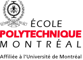
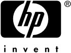
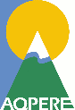
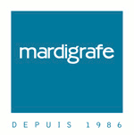
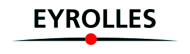
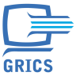
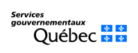
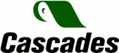
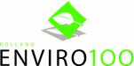

Libre Graphics Meeting 2007 Montréal, Québec, Canada 4-6 May – École Polytechnique de Montréal
The Conference
Projects
Host and Main partner
 Polytechnique is more than just a teaching establishment—it is the accepted reference in engineering, with high-quality teaching and research activities that continually challenge the limits of knowledge.
Sponsors and Partners
Gold Sponsors
Published by Éditions Infopresse, the magazine Grafika is the link between professionals in graphic communications in Québec. Grafika covers graphic design, photography, illustration in print production and of technolgies inherent to this sector.
 Contributing to customer business outcomes with open source and Linux!
GIMP is the GNU Image Manipulation Program. It is available for a wide range of platforms, including GNU/Linux, Windows and MacOS X. It is the most widely used free software graphics package, with millions of users worldwide.
Partners
 AQPERE is a non-profit organisation with the goal to promote education that about the environment.
Silver Sponsors

Everything in graphics at one address since 1986.
Benefactor Sponsors
KDE is a powerful Free Software graphical desktop environment for Linux and Unix workstations. It combines ease of use, contemporary functionality, and outstanding graphical design with the technological superiority of the Unix operating system.
 Group Eyrolles is a leader in professional Editions Eyrolles and Editions d'Organisation

Technology Serving Education
 The mission of the department is to develop various means aimed at simplifying governmental service access, regrouping Management services and developing e-government.
Revolution Linux is a service company specialised in free/libre software based infrastructure.

Cascades Fine Papers Group

The LGM Brochure Special Issue was printed on ecological paper Enviro100